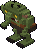
Goblin
Basso, verde, occhi gialli. Tira indietro la picca con un grugnito e affonda: durante la carica arretra o fatti di lato.
- Energia
- 6
- Danno
- 2 per colpo
- Velocità
- 3,2 m/s
- Dal piano
- 1
- Dove
- I sotterranei (35%), Le stanze nobiliari (30%)
Escono dal fumo delle stanze-arena. Una volta svegli sanno sempre dove sei: attaccano se ti vedono e aprono le porte di legno. Ogni attacco ha una carica che si vede o si sente: è il momento per scansarsi. Scendendo, le arene hanno più nemici.
"Dove" dice in quali ambienti esce e quanto spesso rispetto agli altri mostri di quell'ambiente. Per confronto, la principessa cammina a 3,5 m/s.

Basso, verde, occhi gialli. Tira indietro la picca con un grugnito e affonda: durante la carica arretra o fatti di lato.
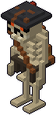
Tira con l'arco da lontano. Lo scricchiolio della corda è l'avviso: spostati di lato e la freccia va a vuoto.
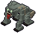
Un morto che mangia i morti. Corre più di te, si acquatta soffiando e balza: fatti di lato, e dopo il balzo resta scoperto.
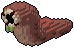
Lungo quasi due metri, tanta energia. Tiene le distanze e sputa bava a parabola: è lenta, la si schiva camminando.
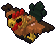
Un gallo del castello cresciuto troppo. Vola zigzagando, si alza starnazzando e scende in picchiata: spostati mentre si alza.
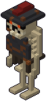
Spada e scudo tondo. I dardi che gli arrivano da davanti rimbalzano sullo scudo: colpiscilo mentre alza la spada, o di fianco.
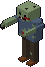
Lento, ma ci vuole tanto a fermarlo, e raramente è solo. Se ti morde cammini a fatica per un po': non farti chiudere in un angolo.
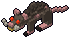
Grande come un cane, svelto e fragile. Arriva a gruppi e morde le caviglie: guarda in basso per colpirlo.
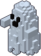
Un lenzuolo pallido che fluttua. A tratti svanisce e i dardi gli passano attraverso. Il suo tocco gelido ti ruba il mana.
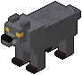
Non viene dritto: ti gira intorno, poi si acquatta ringhiando e balza a mordere. Fatti di lato mentre si acquatta.
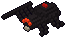
Nero col segno rosso. Tiene le distanze e sputa ragnatela a parabola: se ti prende cammini a fatica. È lenta, spostati.
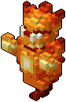
Fuoco che ha preso forma, e fa luce. Lancia fiammate che esplodono dove toccano. Il Dardo di fuoco non lo brucia.
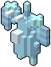
Schegge di ghiaccio ammucchiate attorno a un cuore bianco. Lancia schegge che rallentano. Il gelo non gli fa niente.
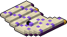
Un tomo della torre che vola a V come due ali, con un occhio e i denti. Strappa ventagli di pagine taglienti: sul bordo del ventaglio si passa.
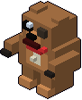
Un peluche grande come una bambina, un bottone per occhio e la pancia scucita. Morbido e duro a morire: si lancia ad abbracciarti.
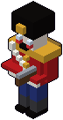
Giubba rossa, colbacco nero, la chiave sulla schiena. Si sente la molla, poi spara tre tappi di fila: dopo il primo spostati.
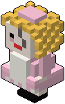
Vestito rosa, boccoli d'oro, una crepa sul viso. Si muove solo quando non la guardi: tienila davanti agli occhi. Si rompe in fretta.